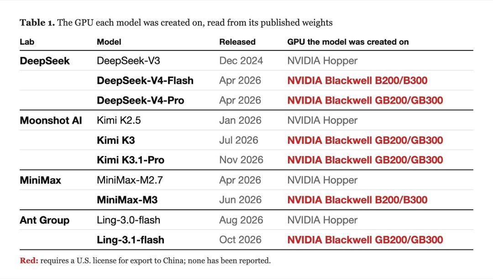
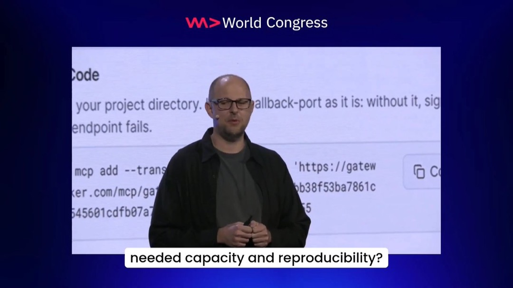
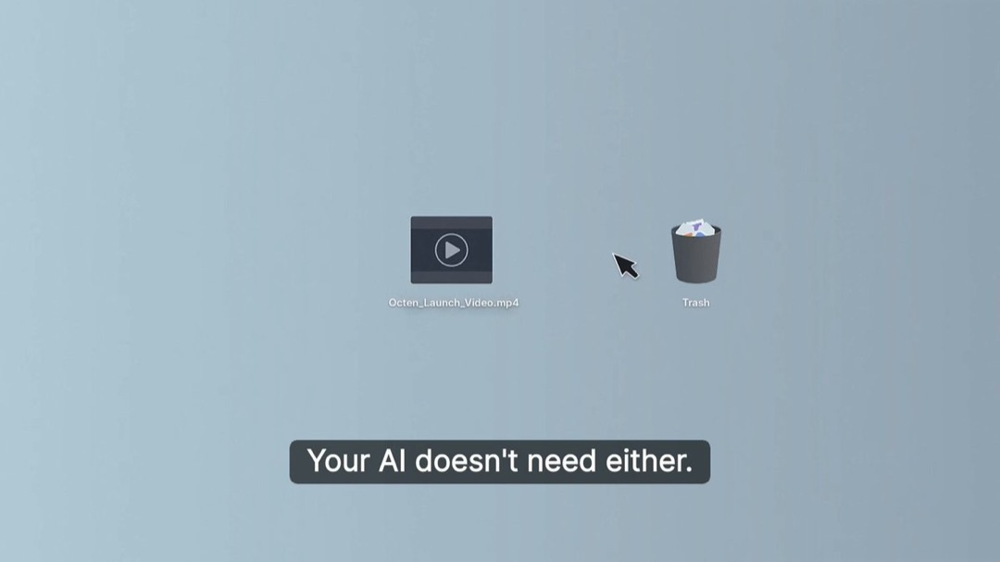
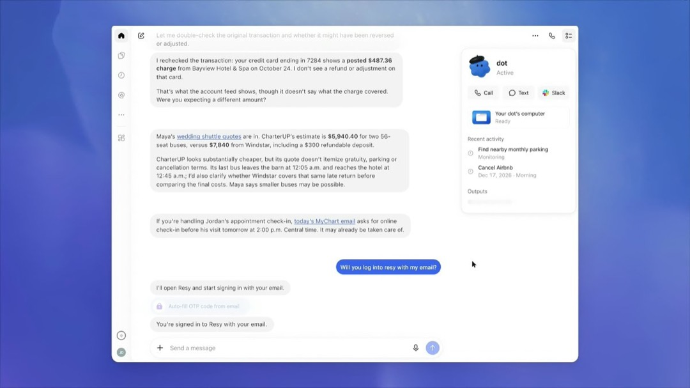

本期速览
01 Agent项目需确定性流程做骨架
03 黄仁勋辞任Nvidia CEO
05 取证指中国模型用Blackwell训练
06 Kronk SDK加入语音与MTP支持
07 Nebius以预付款与贷款扩AI基建
08 Docker沙箱支持云端常开运行
01｜Agent项目需确定性流程做骨架
来源（X） · @zcswl7961 · 2026-11-13 08:00
审批顺序、权限校验、金额边界、数据落库这些规则明确的步骤，放在状态机或 Pipeline 里更容易审计；模型更适合做需求分类、非结构化信息提取，以及需要结合现场反馈判断的局部任务。
把整条业务流程交给模型自由安排，看起来灵活，出了错却很难说清是哪一步越权、漏检或重复执行。更实际的架构，往往是确定性流程做外层骨架，Agent 只在确实需要判断的节点里工作。
你们现在的 Agent 项目里，哪些环节是模型真的不可替代，哪些只是把原来的业务代码又包了一层 Prompt？
02｜Fable 5.2提示词生成3D动画
来源（X） · @DDJCXX · 2026-11-12 12:00
前后半个小时左右，用了 18 万 token。中间它自己看了试渲图，发现琵琶被头挡住，改完才正式渲染。
人是几何体拼的，手没有手指，近看还比较简单。
评论区是完整提示词，把敦煌飞天换成你想做的题材就能用，跑之前先装好免费的 Blender👇
03｜黄仁勋辞任Nvidia CEO
来源（X） · @mingchikuo · 2026-11-12 23:54
1. 短期利空出盡：
對股市而言，短期內可能是一次性的利空出盡。黃仁勳目前已與 Nvidia 完全切割，接下來國會傳喚黃仁勳及後續調查，對 Nvidia 股價的影響應該會較小。至於黃仁勳離職後的動向對 Nvidia 的影響，在調查結果出爐前，現在就下判斷仍言之過早。
2. Google TPU 為直觀下的最大受益者：
在 Nvidia 面臨接班不確定性下，Google TPU 可能有機會進一步取得客戶與供應鏈信任，其核心合作廠商聯發科與 Broadcom 或為短期市場焦點。
3. 接班影響最快自 2028 年浮現：
目前 CFO Colette Kress 擔任代理執行長。後續正式 CEO 交接與相應的組織改革，對 Nvidia 產品開發與競爭力的影響，預期最快可能自 2028 年開始浮現。
4. 產能預訂與規格升級為供應鏈研究焦點：
黃仁勳的產品策略對供應鏈有兩大激進影響：「產能預訂」與「規格升級」。未來需密切關注供應鏈在擴產與新技術開發方面有無變化，這是支撐 Nvidia 供應鏈高本益比的核心因素之一。
5. 中國需求與出口管制：
Nvidia 最終流向中國買家的 AI 晶片營收比重，可能高於過去對外的正式聲明。因此，有些投資人擔心，美國政府實施更嚴格的出口管制後，Nvidia 營收將顯著衰退。不過，中國終端需求並不會因出口管制而消失。即使出口管制加嚴，只要海外仍存在轉售管道，即使轉售價格高出數倍，中國買家仍有可能承擔溢價並輾轉取得 Nvidia 晶片／機櫃。
04｜企业级RAG需检索评测与溯源
来源（X） · @UPing123zzz · 2026-11-12 20:00
但如果你把这套东西直接交给企业使用，很快就会发现，Demo 能跑通和系统能上线，完全是两回事。
用户会上传重复资料、过期文件、格式混乱的文档。不同部门的数据可能不能互相访问。检索结果看起来相关，却不一定能支持最终答案。模型可能生成了非常流畅的内容，但关键事实根本没有出现在来源里。
这时候，你才会真正理解为什么企业级 RAG 需要数据治理、权限控制、检索评测、引用溯源、答案审核和持续更新。
尤其是做 GEO、企业知识库和自动内容生产的时候，问题更加明显。
如果知识库里本来就没有某个产品参数，模型却替客户编造出来，那么文章生成得再好看，也可能给企业造成实际损失。
所以我现在判断一个 RAG 项目有没有价值，越来越不关心它能不能回答十个演示问题，而是关心几个更麻烦的事情：回答错了能不能发现？来源能不能追溯？知识更新后会不会失效？出现问题能不能定位？客户能不能真正放心使用？
做出一个能回答问题的 RAG，是入门。做出一个知道什么时候不该回答、能够持续验证结果的 RAG，才开始接近工程交付。
05｜取证指中国模型用Blackwell训练
来源（X） · @niubi · 2026-11-13 05:41
中文译文
"通过对发布时间表和模型细节的一些分析，我估计其中最大的几个模型——Kimi K3 和 DeepSeek-V4-Pro——各使用了 2,000 到 3,000 块 Blackwell GPU。这种规模的集群每套购买成本大约在 1.5 亿到 2 亿美元之间，仅这些实验室加起来就将涉及价值超过五亿美元的出口管制 GPU，这还不包括实验性算力或其他用途。我们很可能会看到数十亿美元的出口管制 GPU 支出。"
原文
"With some analysis of release schedules and model details, I estimate that the largest, Kimi K3 and DeepSeek-V4-Pro, used 2,000 to 3,000 Blackwell GPUs each. Clusters of this size cost on the order of $150 to $200 million each to buy, and across these labs alone would add up to more than half a billion dollars of export-controlled GPUs, not counting experimental compute or otherwise. It’s quite likely that we see multi-billion dollar expenditure on export-controlled GPUs."
引用内容
will depue @willdepue
中文译文
我有一个重大发现要分享。
我找到了确凿的取证证据，表明中国排名前四的 AI 实验室——DeepSeek、Moonshot、MiniMax 和蚂蚁集团——都是基于 NVIDIA 最先进的 Blackwell 芯片构建其最新模型的，而这些芯片被禁止出口到中国。
这听起来很疯狂，但我发现几乎每个 AI 模型都携带着训练它的 GPU 的隐藏签名。当一个模型首次建立时，其权重的初始值会按照一个取决于具体 GPU 的模式排列。GPU 和随机种子数的每种组合都会产生一个独特的模式——相当于创建该模型所用硬件的一种指纹。该模式的痕迹会在训练过程中保留到最终发布的模型中。
再次强调，这些证据不是基于任何内部消息或泄露。它是基于对这些公司自己发布的模型权重的取证分析。
我搜索了超过六万亿种芯片布局和随机种子数的组合，并将它们与开源权重模型进行匹配。通过这一过程，我找到了确凿证据，表明六个中国 AI 模型——包括 DeepSeek-V4-Pro、Kimi K3 和 MiniMax-M3——是在 NVIDIA Blackwell 系统上初始化的。其中四个模型匹配 Grace Blackwell，即 NVIDIA 旗舰液冷机架级系统中的 GB200 和 GB300 部件。
随后我在真实硬件上验证了这些结果。使用未修改的 PyTorch 和我恢复的种子，一块 Blackwell B300 逐比特复现了 DeepSeek-V4-Flash 未被修改的初始权重，一块租来的 GB200 以 0.999995 的相关性复现了 Kimi K3 的初始权重。一块 Hopper H100 没有复现出 DeepSeek-V4-Flash 的任何权重，而将种子改变一位就会破坏匹配。（顺便说一下，DeepSeek 的种子是 953049583。）该方法还经验证能够将 24 个已知的开源权重模型与其开发者所使用的硬件进行匹配。
这些结果极不可能是巧合。在六万亿种组合中，最佳意外匹配应该只达到约 8 sigma（即比随机机会产生的结果高出八个标准差）。真实的匹配范围从 49 到 1,385 sigma，即使最弱的单项测试也达到 20。
这些是数据中心规模的训练任务。通过对发布时间表和模型细节的一些分析，我估计其中最大的几个模型——Kimi K3 和 DeepSeek-V4-Pro——各使用了 2,000 到 3,000 块 Blackwell GPU。这种规模的集群每套购买成本大约在 1.5 亿到 2 亿美元之间，仅这些实验室加起来就将涉及价值超过五亿美元的出口管制 GPU，这还不包括实验性算力或其他用途。我们很可能会看到数十亿美元的出口管制 GPU 支出。
我对这个结果有很高的信心，并且已被 OpenAI 和 Anthropic 的高级研究人员独立验证。您可以在 http://unemploymentlabs.com/checkpoint-forensics 阅读完整报告。
通过这种类型的检查点取证，我还发现了关于这些模型的许多其他信息，很快将有更多内容分享。
原文
I have a major result to share.
I’ve found conclusive forensic evidence that the top 4 Chinese AI labs—DeepSeek, Moonshot, MiniMax and Ant Group—have built their newest models on NVIDIA’s most advanced Blackwell chips, which are barred from export to China.
This sounds insane, but I discovered that almost every AI model carries a hidden signature of the GPU that trained it. When a model is first set up, the starting values of its weights are laid out in a pattern that depends on the exact GPU. Each combination of GPU and seed number produces a unique pattern—a sort of fingerprint of the hardware used to create the model. Traces of that pattern survive training into the published model.
Again, this evidence isn’t based on any insider information or leaking. It’s based on a forensic analysis of the model weights released by the companies themselves.
I searched more than six trillion combinations of chip layout and seed number and matched them to open-weights models. In doing so, I found conclusive evidence that six Chinese AI models—including DeepSeek-V4-Pro, Kimi K3, and MiniMax-M3—were initialized on NVIDIA Blackwell systems. Four of the models match Grace Blackwell, the GB200 and GB300 parts in NVIDIA’s flagship liquid-cooled rack-scale systems.
I then verified these results on real hardware. Running unmodified PyTorch with the seeds I’d recovered, a Blackwell B300 reproduced DeepSeek-V4-Flash’s untouched starting weights bit for bit, and a rented GB200 reproduced Kimi K3’s to a correlation of 0.999995. A Hopper H100 reproduced none of DeepSeek-V4-Flash’s, and changing the seed by one broke the match. (DeepSeek’s seed is 953049583 by the way.) The method also was verified to match 24 known open-weights models to the hardware that developers said they used.
It is exceedingly unlikely that these results are a coincidence. Across six trillion combinations, the best accidental match should reach only about 8 sigma (i.e., eight standard deviations above what random chance would produce). The real matches range from 49 to 1,385 sigma, and even the weakest single test hits 20.
These were data-center-scale training runs. With some analysis of release schedules and model details, I estimate that the largest, Kimi K3 and DeepSeek-V4-Pro, used 2,000 to 3,000 Blackwell GPUs each. Clusters of this size cost on the order of $150 to $200 million each to buy, and across these labs alone would add up to more than half a billion dollars of export-controlled GPUs, not counting experimental compute or otherwise. It’s quite likely that we see multi-billion dollar expenditure on export-controlled GPUs.
I am highly confident in this result, and it has been independently verified by senior researchers at OpenAI and Anthropic. You can read the full report at http://unemploymentlabs.com/checkpoint-forensics.
There is much more I’ve identified about these models through other forms of checkpoint forensics like this, and will have more to share soon.

06｜Kronk SDK加入语音与MTP支持
来源（X） · @Kronk_AI · 2026-11-13 05:33
中文译文
新版本发布 v1.33.2
为 SDK 增加了语音（文本转语音）支持，为 Unsloth 模型增加了原生多标记预测（MTP）支持以及一系列新的决策模型，增加了具有修订默认 MoE 设置的 Kimi K2.1 模型类，增量消息缓存（IMC）检查点改进，持续的 llama.cpp、yzma 和 Malina 库升级，以及一批可靠性和 bug 修复。
https://www.kronkai.com/
原文
New Release v1.33.2
Brings speech (text-to-speech) support to the SDK, native multi-token-prediction (MTP) support for Unsloth models alongside a set of new decision models, a Kimi K2.1 model class with revised MoE defaults, incremental message cache (IMC) checkpoint improvements, steady llama.cpp, yzma, and Malina library upgrades and a batch of reliability and bug fixes.
https://www.kronkai.com/
07｜Nebius以预付款与贷款扩AI基建
来源（X） · @TechCrunch · 2026-11-13 05:29
中文译文
Nebius 计划通过客户预付款和贷款为其 400 亿美元的 AI 基础设施扩张提供资金，与此同时，微软一个数据中心的延迟引发了人们对其融资模式的质疑。
https://spr.ly/6016ByymCI
原文
Nebius plans to fund its $40 billion AI infrastructure expansion through customer prepayments and loans, even as delays at a Microsoft data center raise questions about its financing model.
https://spr.ly/6016ByymCI
08｜Docker沙箱支持云端常开运行
来源（X） · @Docker · 2026-09-25 02:38
中文译文
今天我们推出 Cloud Sandboxes：与笔记本上的 Docker Sandboxes 相同的 microVM 隔离，相同的 CLI，常驻的 Docker 托管计算。
合上你的笔记本电脑。让代理继续运行。用一条命令在本地和云端之间切换。新账户可获得 $250 额度：http://docker.com/sbx-promo
原文
Today we're introducing Cloud Sandboxes: same microVM isolation as Docker Sandboxes on your laptop, same CLI, always-on Docker-managed compute.
Close your laptop. Keep the agent running. Move between local and cloud with one command. $250 credit for new accounts: http://docker.com/sbx-promo

09｜Octen Pulse开源毫秒级搜索
来源（X） · @omarsar0 · 2026-11-13 05:21
中文译文
一旦代理在每个任务中发起数十次调用，搜索速度就变得重要得多。
对 Octen Pulse 很兴奋。它是一个针对超低延迟调优的开源搜索引擎。
值得在你的代理技术栈中尝试。
原文
Search speed matters a lot more once agents make dozens of calls per task.
Excited about Octen Pulse. It's an open-source search engine tuned for very low latency.
Worth trying in your agent stack.
引用内容
Kuan Zou @KZouAPT
中文译文
10ms。每月 $20 无限使用。现在支持多模态。
今天，@OctenAI 推出：
1. Octen Pulse：单标记速度的开源搜索。
2. 无限搜索：每月 $20。不再按 API 调用计费。
3. 多模态搜索：文本和图像。平台级支持。
人类用 Google 搜索，机器用 Octen 搜索。
原文
10ms. Unlimited for $20/month. Now multimodal.
Today, @OctenAI is launching:
1. Octen Pulse: Open-source search at the speed of a single token.
2. Unlimited Search: $20/month. No more counting API calls.
3. Multimodal Search: Text and images. Platform.
Humans search with Google. Machines search with Octen.

10｜ChatGPT dot支持自定义指令
来源（X） · @ChatGPT · 2026-11-13 04:04
中文译文
你的 dot 现在有了…
⚡️ 更快的回复
💬 更少的行话
🫡 更好的执行力
而且，它现在可以遵循你的自定义指令了。在对话中告诉你的 dot，比如如何表现或哪些操作需要你的批准。
"始终使用小写说话。"
"发送任何邮件之前先给我看草稿。"
你也可以在移动端的 Customize > Behavior 中设置自定义指令和规则，或通过网页和桌面上的 dot 菜单进行设置。
原文
Your dot now has…
⚡️ Faster replies
💬 Less jargon
🫡 Better follow-through
And, they can now follow your custom instructions. Tell your dot in the thread things like how to behave or which actions need your go-ahead.
“always talk in lowercase.”
“Show me a draft before sending any emails.”
You can also set custom instructions and rules in Customize > Behavior on mobile, or through your dot’s menu on web and desktop.
